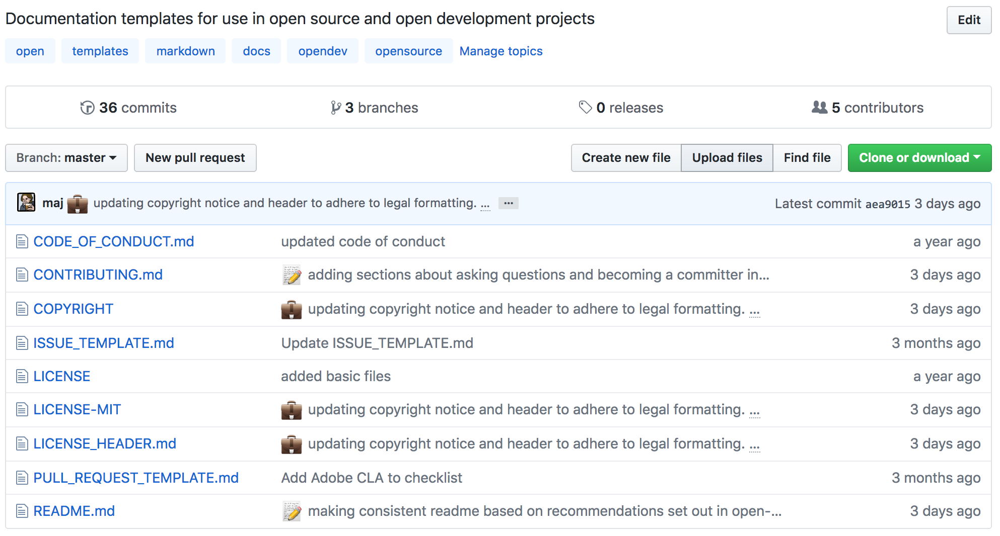
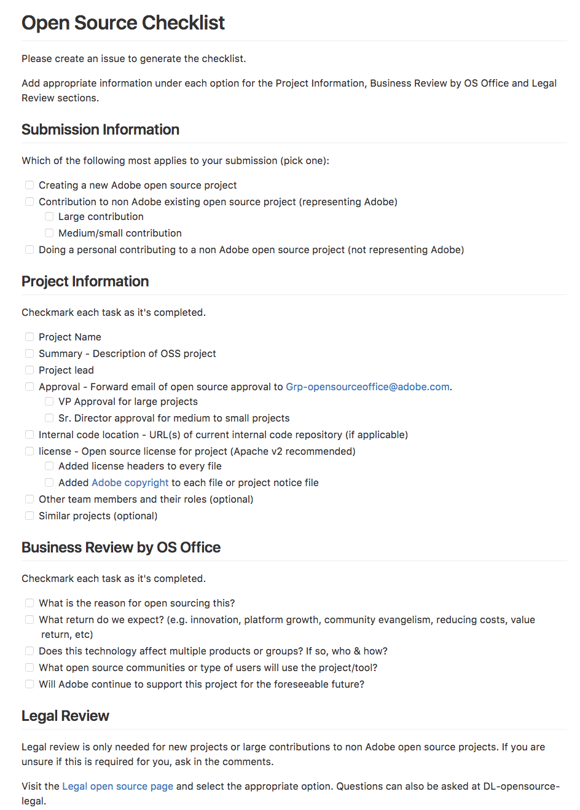
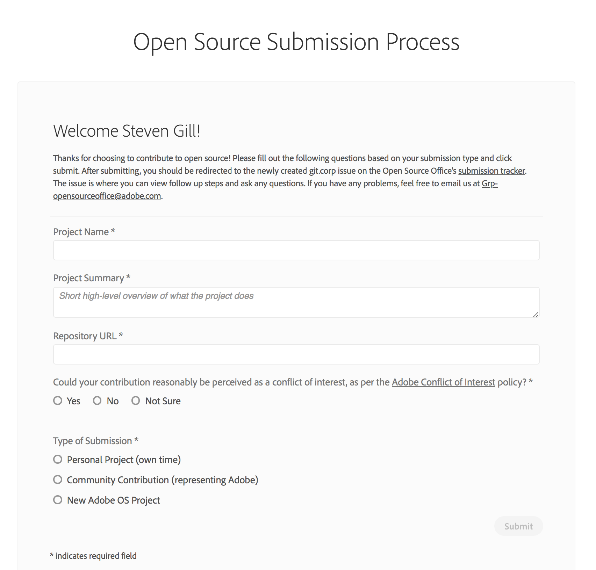
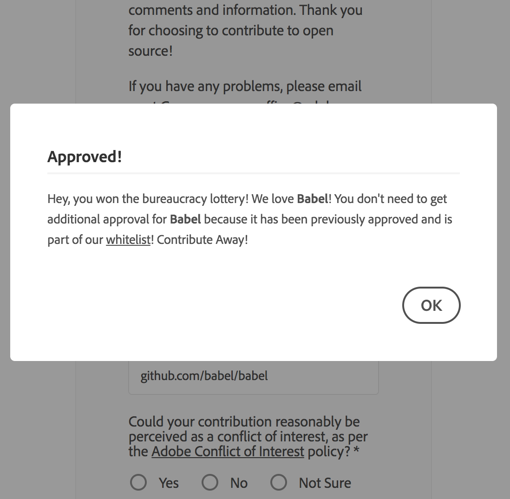
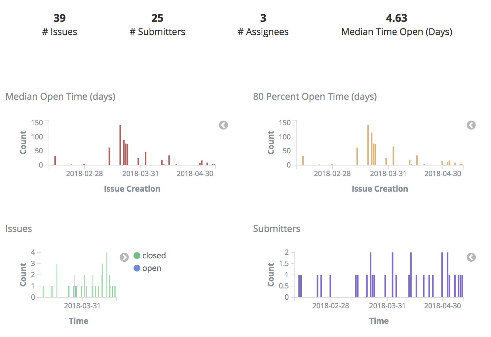
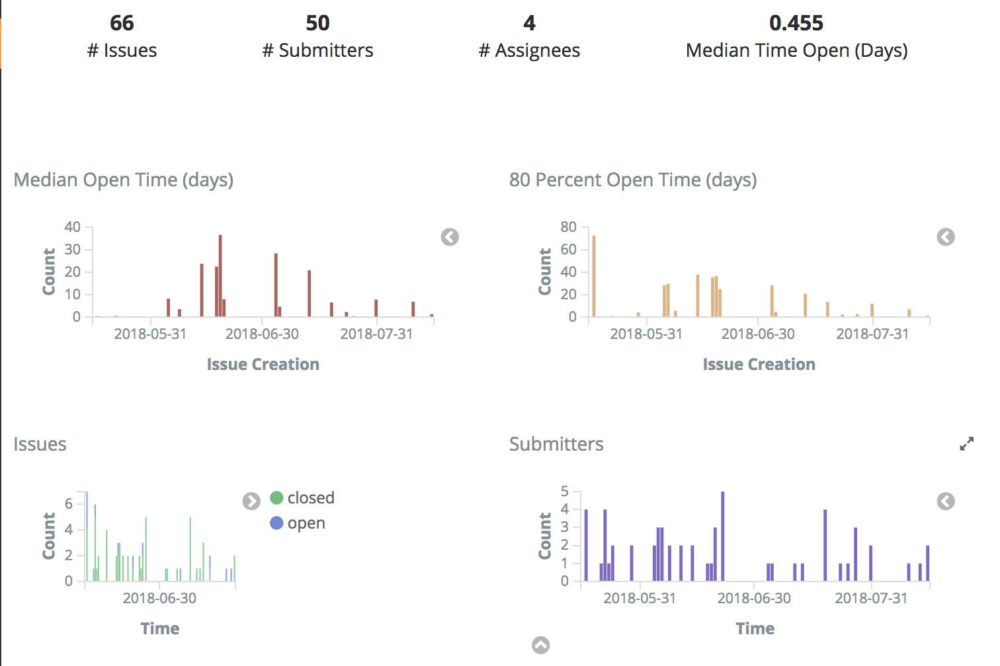
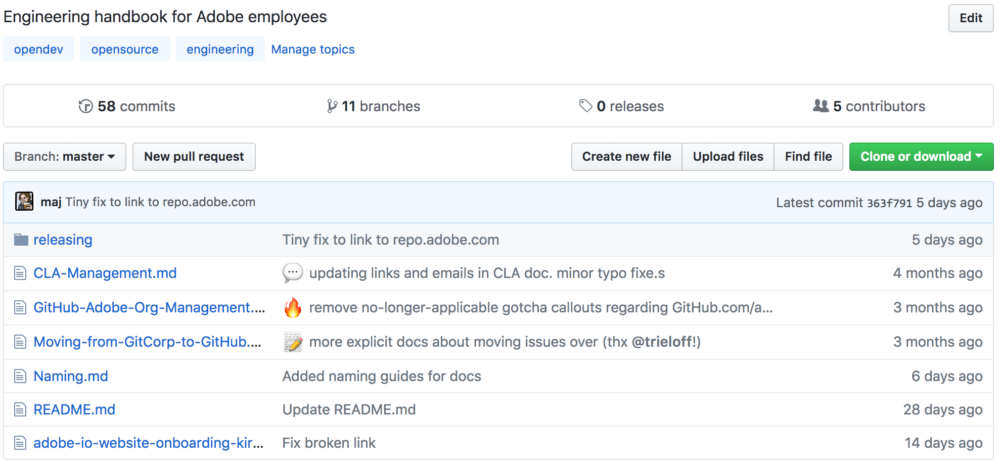
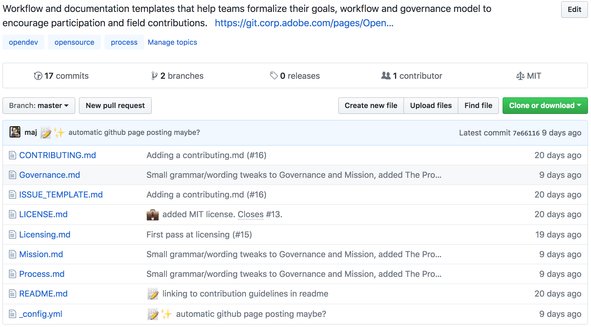
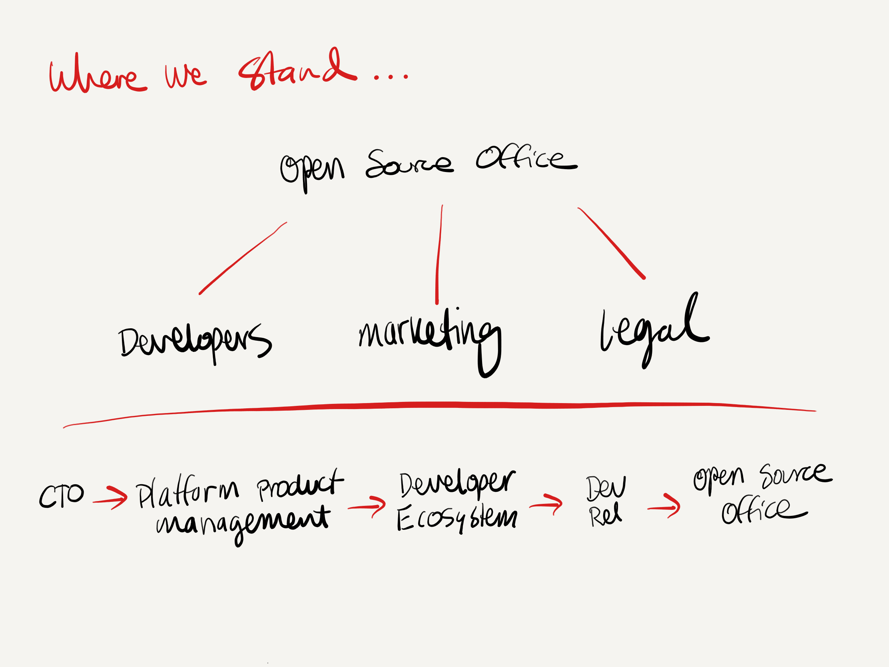

Changing
Open Source
Culture @Adobe
Adobe & Open Source === ???
- Employees contribute to OS projects on company time
- Company sponsors OS
events
- Company OS internal code
& is responsible for OS project
stewardship
What are the Problems?
Confusing process to contribute to OS
- Email based process
- Composed of Legal, Compliance, Patent, Branding
- Took months to complete
Employees avoided or ignored the process
- Gave up on existing OS submissions
- Legal became the "boogyman"
- Started pushing to GitHub without approval (Big Risk)
Wild West on GitHub
- 35 Adobe related GitHub Orgs
- Repos abandoned, issues and PRs ignored
Adobe's Open Source Office
Grow Open Source at Adobe
Starter repo

Revamped OS Submission Process


New Approvelist and Denylist

Checklist Approval Close Rate (Feb-April 2018)

Form Approval Close Rate (May-July 2018)

Future improvements
Clean up Adobe GitHub Org
- Removed 100 inactive users
- Automated onboarding and
offboarding
- Reduce number of Adobe Orgs
in the wild
Adobe CLA
opensource.adobe.com/cla.html
Handbook

Open Development Template

Internal Open Source Summits
OS Awards
- Top OS Contributor
- Outstanding Open Source contributor
- Employee Recognition Program
Communication and Promotion

Executive Buy In Needed
Top 25 company at GitHub
OSS-Contributors project
- Scan GitHub every month to get
company-to-user associations as reported by
people's Company field on their GitHub profile
- We cross-reference that with commit
activity on GitHub
- Original Idea from a
blog post
by Felipe Hoffa, Developer Advocate at Google
open source
+
business strategy
Thanks